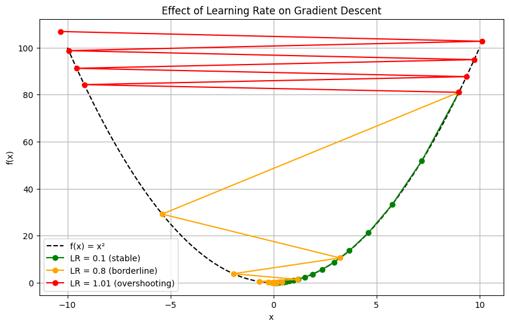

How Do Neural Networks Learn?
How do Neural Networks learn?
Training a neural network has never been easier. You define the architecture with Keras (or PyTorch, if you know what’s good), set the optimizer and run the model.train command. Many times, most people don’t pay attention to the optimizer. Most people simply choose Adam and start the training without questioning if it’s the right choice. However, as you get involved with architectures a bit more complex than the classical feed-forward neural network for the MNIST digits dataset, you may come across quite a frustrating situation: after a few epochs, the model won’t improve the loss metric. And maybe (just maybe) the reason could be the optimizer you are using.
Gradient descent: how to learn from mistakes
So, how exactly does a neural network learn from its mistakes? The answer lies in one of the simplest yet powerful ideas in optimization: gradient descent.
The gradient of the loss with respect to certain parameters tells us the direction in which the loss increases the most. So, to reduce the loss, we should take a small step in the opposite direction. Mathematically, we usually represent the model’s parameters with the Greek letter \(\theta\), and \(\mathcal{L}(\theta)\) is the loss function. Hence, the update rule is: \[ \large \theta \leftarrow \theta - \eta \cdot \nabla_{\theta} \mathcal{L}(\theta) \] Here, \(\eta\) is the learning rate, a small constant which controls the step size. Repeat this process over and over, and the model will gradually adjust its parameters to reduce the error, ideally finding a minimum of the loss function. Here is a visual representation of this process:

We usually work with really big datasets, so using all the examples is often not feasible. To solve this problem, the are a few modifications we can make to gradient descent:
- Stochastic Gradient Descent: Instead of using all the examples in the dataset for each step, we only use one.
- ✔️ It is much faster than traditional gradient descent.
- ❌ It is less precise, which can hinder convergence.
- Mini-batch Gradient Descent: Computes the gradient using a small subset (batch) of the dataset.
- ✔️ Faster than traditional gradient descent.
- ✔️ Balances precision and speed.
- ❌ Less precise than traditional gradient descent.
Learning is a two-phase process
The most critical hyperparameters in optimization is the learning rate. Gradient Descent and its early variants typically use a constant value for this parameter, which might seem sufficient at first glance. However, training a model can often be understood as a two-phase process: an initial phase of rapid adaptation, followed by a slower stage of fine-tuning.
In the early phase, the model makes several large parameter updates, as it quickly learns the general structure of the data - some sort of “heavy learning process”. Once this phase ends, the model enters a refinement stage, where more subtle adjustments are required to further improve performance. These smaller updates would require a lower learning rate, in order to avoid overshooting the minimum. We can see an example of this below:

For this particular loss function, setting the learning rate to 1.01 would make the optimizer to overshoot, preventing convergence to the minimum. On the other hand, setting the learning rate to less than 1 would allow the optimizer to eventually find the minimum.
While mastering the art of selecting the right learning rate is essential, a constant learning rate can sometimes be limiting, as it lacks the flexibility to adapt to the evolving needs of the optimization process. Hence, a natural step is to design new optimizers which dynamically adjust the learning rate, either over time or based on the gradients’ behavior.
AdaGrad: Adaptive Gradient
AdaGrad, short for Adaptive Gradient, was the first step towards dynamic learning rate adjustment. Instead of using a fixed learning rate, it reduces it based on the cumulative gradient of each parameter. Let’s dive into the math:
Suppose we use \(\theta \in \mathbb{R}^n\) to denote the vector containing the \(n\) parameters of the model. We will use \(g_{t}=\nabla_{\theta}\mathcal{L}(\theta_{t})\) to refer to the gradient of the parameters at epoch \(t\). For a specific parameter \(\theta_{i}\), we can compute the cumulative sum of its gradients as: \[ \large G_{t,i} = \sum_{\tau=1}^{t} g_{\tau,i}^2=G_{t-1,i}+g_{t,i}^{2} \] Think of \(G_{t,i}\) as the cumulative effort the optimizer has made during the training to update parameter \(\theta_{i}\). We now reformulate the update rule as follows: \[ \large \theta_{t+1,i} = \theta_{t,i} - \frac{\eta}{\sqrt{G_{t,i}} + \epsilon} \cdot g_{t,i} \] If the parameter has received large or frequent updates (i.e., \(G_{t,i}\) is large), the AdaGrad assumes it has already undergone substantial learning. As a result, its learning rate is reduced, allowing for more precise adjustments. This is how AdaGrad dynamically adjusts the learning rate per parameter.
RMSProp
Even though lowering the learning rate over time helps with the overshooting problem, AdaGrad may reduce it too quickly. In practice, if the model spends several epochs in the early stages of training, the cumulative gradients can grow large enough to shrink the effective learning rate dramatically. As a result, the model may stop learning long before reaching a satisfactory solution.
To avoid this. Geoffrey Hinton proposed RMSProp, a simple yet effective modification to the AdaGrad algorithm.
Instead of relying on the entire history of gradients, RMSProp replaces \(G_{t,i}\) with an exponential moving average (EMA) of the squared gradients. RMSProp replaces the cumulative sum with: \[ \large E[g^2]_{t,i}=\gamma · E[g^2]_{t-1,i}+(1-\gamma)·g^2_{t,i} \] Here, \(\gamma \in[0,1)\) is the decay factor, which determines how much weight is given to past gradients. For example, if \(\gamma=0.8\), then \(E[g^2]_{t,i}\) will be formed 80% by the old gradients and 20% by the new one. This way, we can control the degree to which past gradient influence the parameter update. The update rule becomes: \[ \large \theta_{t+1,i} = \theta_{t,i} - \frac{\eta}{\sqrt{E[g^2]_{t,i}} + \epsilon} \cdot g_{t,i} \] This formulation ensures that parameters associated with frequently large gradients receive smaller updates, while still allowing other parameters to keep learning. Unlike AdaGrad, RMSProp avoids vanishing learning rates by gradually forgetting older information.
Adam
RMSProp solved the learning rate shrinking problem by using an exponentially decaying average of squared gradients. However, there is a subtle issue it fails to address. Imagine we have a “noisy” gradient in a non-convex zone such as: \[ \large g_t \in \{-0.9,\ +1.0,\ -0.8,\ +1.1,\ \dots\} \] RMSProp would only look at the magnitude of the gradients, so \(G_t\) would be: \[ \large G_t \in \{+0.81,\ +1.81,\ +2.45,\ +3.66,\ \dots\} \] According to the logic of RMSProp, such a history suggests that significant updates have already been made, so it lowers the effective learning rate accordingly. However, the fact that the magnitude of the gradients are big and the signs are not consistent could be an indicator that we are not close to a minimum, but rather in a region with bumps or high-frequency noise in the loss surface. This is often the case when using mini-batches instead of the full dataset. RMSProp only uses the magnitude of the gradients, it has no way to detect this directional inconsistency.
This is where Adam steps in. It incorporates a running average for both the squared gradients (like RMSProp) and the gradients themselves. This way, Adam can simultaneously adapt the learning rate and track the overall direction of the descent, enabling it to perform better in noisy regions.
We define 4 new terms:
- \(m_t\): exponential moving average of \(g_t\)
- \(v_t\): exponential moving average of \(g^2_t\)
- \(\beta_1, \beta_2\): decay factors
Both \(m_t\) and \(v_t\) are updated as follows: \[ \large m_t=\beta_1 ·m_{t-1} + (1-\beta_1)·g_t \] \[ \large v_t=\beta_2 ·v_{t-1} + (1-\beta_2)·g^2t \]
Since \(m_t\) and \(v_t\) are initialized to zero, we define: \[ \large \hat{m}_t=\frac{m_t}{1-\beta_1} \] \[ \large \hat{v}_t=\frac{v_t}{1-\beta_2} \]
We are now ready to compute the update rule for Adam: \[ \large \theta_{t+1}=\theta_t +\eta·\frac{\hat{m}_t}{\sqrt{\hat{v}_t}+\epsilon} \]
This balance of directionality and adaptive learning rate makes Adam a robust choice for many modern deep learning tasks.
Comparing the optimizers
Even though it is important to have a solid grasp of the theory, one must be able to quickly detect the problems when working in a real scenario. To connect theory with practice, we are going to run a simple example on a loss function.

The table below summarizes the main pros and cons of each optimizer:
| Optimizer | Pros | Cons |
|---|---|---|
| AdaGrad | Adapts \(\eta\) for each parameter. Useful for sparse features. | \(\eta\) can be reduced too quickly. |
| RMSProp | More stable \(\eta\) update than AdaGrad. | Doesn’t take gradient’s direction into account. |
| Adam | Combines advantages of RMSProp and momentum. | May lead to overfitting. Sensitive to \(\eta\) and default hyperparameters. |
In practice, no optimizer is universally best. Understanding their strengths and weaknesses is key to unlocking the model’s full potential.